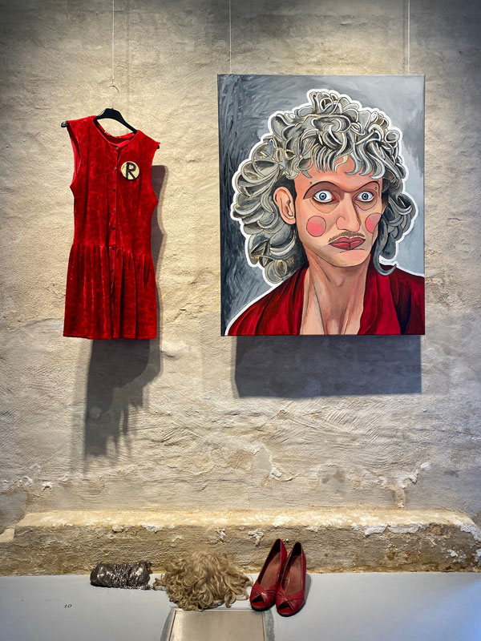
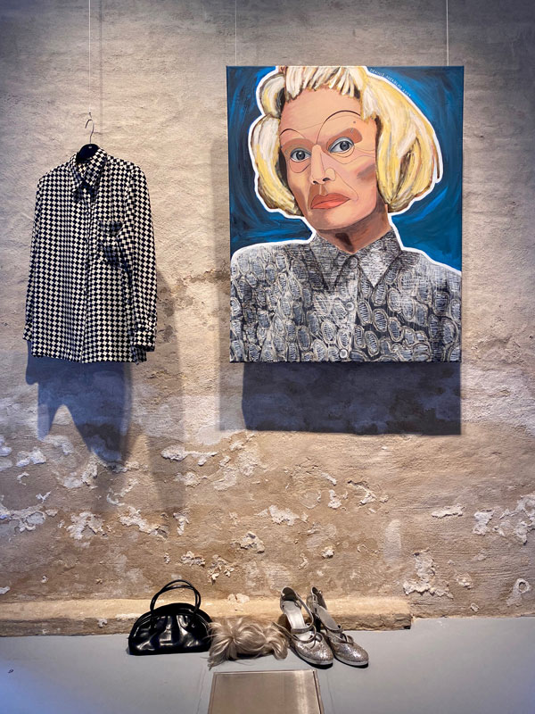
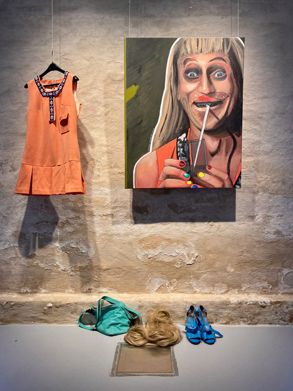
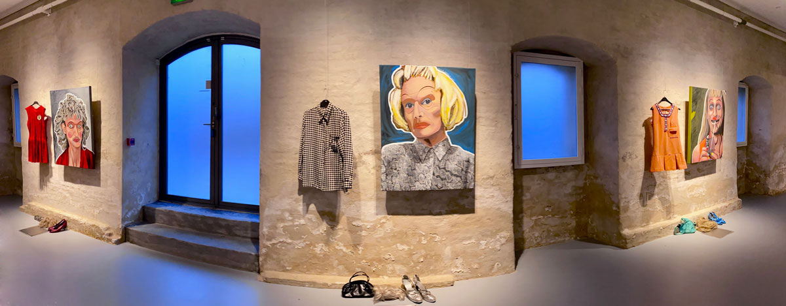

Jeg udstillede disse 3 værker til udstillingen Samtaler Om Tåge på Nordatlantens Brygge. |




Kunst på Færøerne i det 21. århundredeNordatlantens Brygge er et kulturhus, hvor du kan opleve kunst og kultur fra Færøerne, Grønland og Island og det øvrige Norden.nordatlantens.dk |